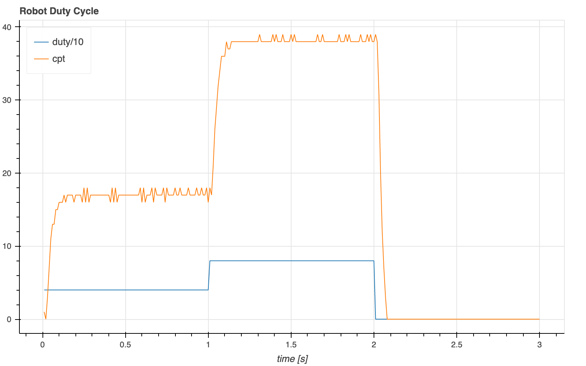

Robot App
Robot App¶
The robot app on the STM32 comprises two tasks:
Control robot velocity, balance, etc. This task is run at precise intervals (e.g. every 10ms) set by a timer interrupt. The controller also sends the status (e.g. velocity, pitch angle) to the host.
Communication with the host, accepting commands such as speed and direction of the robot and control parameters. This is the “default” task and runs always except when interrupted by the controller.
Both tasks share a single serial connection (UART) for communication with the host. The communication task also updates control parameters (e.g. speed) used by the controller.
Access between the tasks is arbitrated as follows:
UART: when sending data to the host, the communication task (briefly) disables interrupts. This ensures message integrity.
Parameters (array of floats): the communication tasks writes, the controller reads parameters. Since single float writes are “atomic”, no special precautions are required for single parameter updates. Multiple parameter updates (e.g. speed of both motors) require suspending interrupts.
The format of all serial communication is binary. Commands from the host start with a single byte defining the command, optionally followed by parameters. Likewise the first byte of all messages to the host indicates its type.
Setup the environment:
import nest_asyncio, sys, os
nest_asyncio.apply()
sys.path.append(os.path.join(os.getenv('IOT_PROJECTS'), 'robot/code/rpi'))
# fix wiring issue
from gpiozero import Button as Pin
try:
Pin(14, pull_up=False)
except:
pass
import stm32
from serial import Serial
stm32.exec_no_follow("""
from pyb import UART
uart = UART(3, 9600, timeout=500)
while True:
t = uart.readchar()
if t < 0: continue
print(f"cmd_handler t = {t}")
uart.writechar(t)
""")
uart = Serial(port='/dev/ttyAMA2', baudrate=9600,
timeout=2, write_timeout=1, exclusive=False)
for i in range(3):
uart.write(bytes([i]))
print("read", uart.read(1)[0])
read 0
read 1
read 2
Works as expected, except that the output from the print statement is ignored.
To fix this, we need to simultaneously monitor the stm32 repl output and run the app, presently sending and reading bytes on /dev/ttyAMA2. Let’s use asyncio to achieve light-weight concurrency.
from serial import Serial
import asyncio
import stm32
stm32_code = """
from pyb import UART
uart = UART(3, 1_000_000, timeout=500)
while True:
t = uart.readchar()
if t < 0: continue
print(f"cmd_handler t = {t}")
uart.writechar(t)
"""
async def repl(cmd, dev='/dev/ttyAMA1'):
"""Send cmd to MCU, then listen & print output."""
stm32.exec_no_follow(cmd)
with Serial(dev, 115200, timeout=0.5, write_timeout=2, exclusive=False) as serial:
while True:
if serial.in_waiting:
data = serial.read(serial.in_waiting)
try:
data = data.decode()
data = data.replace('\n', '\n ')
except:
pass
print(f"MCU: {data}")
await asyncio.sleep(0)
else:
await asyncio.sleep(0.5)
async def main():
uart = Serial(port='/dev/ttyAMA2', baudrate=1_000_000,
timeout=2, write_timeout=1, exclusive=False)
asyncio.create_task(repl(stm32_code))
await asyncio.sleep(1)
for i in range(3):
uart.write(bytes([i]))
print("read", uart.read(1)[0])
# cooperative multitasking: give rt a chance to run
await asyncio.sleep(0.1)
asyncio.run(main())
read 0
read 1
read 2
MCU: cmd_handler t = 0
cmd_handler t = 1
cmd_handler t = 2
Let’s setup the code for sharing state and configuration parameters between the Raspberry PI and the STM32:
from serial import Serial
from struct import pack, unpack
import asyncio
import stm32
stm32_code = """
from array import array
from pyb import UART
from struct import pack
PARAM = array('f', [0, 1, 2])
CMD_PING = 0
CMD_GET = 1
CMD_SET = 2
uart = UART(3, 1_000_000, timeout=500)
smv = memoryview(PARAM)
while True:
t = uart.readchar()
if t < 0: continue
if t == CMD_PING:
uart.writechar(CMD_PING)
elif t == CMD_GET:
index = uart.readchar()
uart.writechar(CMD_GET)
uart.write(pack('f', PARAM[index]))
elif t == CMD_SET:
index = uart.readchar()
uart.readinto(smv[index:index+1])
else:
print(f"unknown command {t}")
"""
CMD_PING = 0
CMD_GET = 1
CMD_SET = 2
async def repl(cmd, dev='/dev/ttyAMA1'):
"""Send cmd to MCU, then listen & print output."""
stm32.exec_no_follow(cmd)
with Serial(dev, 115200, timeout=0.5, write_timeout=2, exclusive=False) as serial:
while True:
if serial.in_waiting:
data = serial.read(serial.in_waiting)
try:
data = data.decode()
data.replace('\n', '\n___: ')
except:
pass
print(f"MCU: {data}")
await asyncio.sleep(0)
else:
await asyncio.sleep(0.5)
async def main():
asyncio.create_task(repl(stm32_code))
await asyncio.sleep(1)
uart = Serial(port='/dev/ttyAMA2', baudrate=1_000_000,
timeout=2, write_timeout=1, exclusive=False)
# ping
uart.write(bytes([CMD_PING]))
print("ping ->", uart.read(1)[0])
await asyncio.sleep(0.1)
# set PARAM[2] = 3.1415
print("set[2] = 3.1415")
uart.write(bytes([CMD_SET, 2]))
uart.write(pack('f', 3.1415))
# get PARAM[2]
uart.write(bytes([CMD_GET, 2]))
assert uart.read(1)[0] == CMD_GET
print("get[2] ->", unpack('f', uart.read(4))[0])
stm32.hard_reset()
asyncio.run(main())
ping -> 0
set[2] = 3.1415
get[2] -> 3.1414995193481445
Let’s spin a motor:
import asyncio
import stm32
from robot import *
PARAM_DUTY1 = const(PARAM_RESERVED+0) # motor1 duty cycle setpoint
PARAM_DUTY2 = const(PARAM_RESERVED+1) # motor2 duty cycle setpoint
async def state_listener(state):
print(f"state {PARAM[PARAM_DUTY1]:8.0f} {state[STATE_CPT1]:8.0f}")
async def main():
async with Comm(state_listener) as robot:
# tests
await robot.ping()
await robot.echo('hello world')
# parameter
await robot.set(PARAM_FS, 5)
await robot.set(PARAM_PWM, 10_000)
# start
await robot.start('duty_control')
# run robot
for duty in [10]: #, 80, 0]:
await robot.set(PARAM_DUTY1, duty)
await asyncio.sleep(10)
asyncio.run(main())
MCU: start Comm @ 1000000 baud
state 10 -1
state 10 52
state 10 61
state 10 60
state 10 60
state 10 59
state 10 60
state 10 59
state 10 58
state 10 59
state 10 58
state 10 58
state 10 57
state 10 57
state 10 58
state 10 56
state 10 57
state 10 56
state 10 55
state 10 55
state 10 55
state 10 56
state 10 56
state 10 55
state 10 57
state 10 56
state 10 56
state 10 56
state 10 56
state 10 57
state 10 57
state 10 55
state 10 56
state 10 56
state 10 56
state 10 56
state 10 56
state 10 55
state 10 56
state 10 56
state 10 55
state 10 55
state 10 55
state 10 55
state 10 54
state 10 55
state 10 54
state 10 55
state 10 54
Let’s plot this.
from asyncio_mqtt import Client
from struct import pack
import asyncio, json, os
import stm32
from robot import *
print(f"plot @ http://{os.getenv('DNS_NAME')}.local:5006")
MQTT_BROKER = os.getenv("HOST_IP")
TOPIC_ROOT = "public/vis"
PARAM_DUTY1 = const(PARAM_RESERVED+0) # motor1 duty cycle setpoint
PARAM_DUTY2 = const(PARAM_RESERVED+1) # motor2 duty cycle setpoint
class DutyControl:
def __init__(self):
pass
async def main(self):
async with Client(MQTT_BROKER) as client, \
Comm(self.state_listener) as robot:
self.client = client
await client.publish(f"{TOPIC_ROOT}/new", json.dumps({
"columns": [ "time [s]", "duty/10", "cpt" ],
"rollover": 1000,
"args": { "title": "Robot Duty Cycle" },
}))
await robot.set(PARAM_FS, 100)
await robot.start('duty_control')
for duty in [40, 80, 0]:
await robot.set(PARAM_DUTY1, duty)
await asyncio.sleep(1)
async def state_listener(self, state):
try:
t = state[STATE_K]/PARAM[PARAM_FS]
duty = state[STATE_DUTY1]
cpt1 = state[STATE_CPT1]
await self.client.publish(f"{TOPIC_ROOT}/bin", pack('!3f', t, duty/10, cpt1))
except Exception as e:
print("*****", e)
dc = DutyControl()
asyncio.run(dc.main())
Motor counts per cycle (proportional to rpm) versus time for different duty cycles. The dynamics are clearly visible from the plot. This would be difficult to see from a table.
